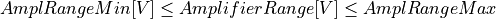
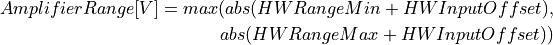
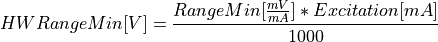
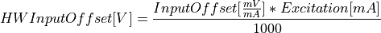
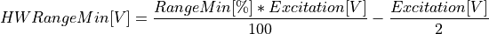
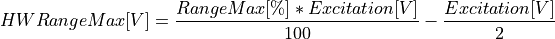

Channel Types¶
TRION and TRION3 modules support multiple different channel types. These channels futher support different measurement modes.
The following sections describe the different channels and provide an extensive list of the available modes.
As an SDK developer you do not have to create your own database of boards and their channels and modes. A boards abilities are reported by its Properties.xml document. It can be requested during runtime for every device and is described in more detail in the XML Reference chapter.
Analog Channels (AI)¶
Technically the path for analog measurement data consist of three distinct parts on TRION™-boards.
The analog input-path performing the signal-conditioning
The A/D conversion
Digital data post-processing
The TRION-API however encapsulates the exact details of this chain in a way, so that the various differences in implementation depending on the exact board-type are not visible above the interface. This allows an application to choose a rather generic approach toward analog channels in general, and frees the application developer from the need to develop against a specific board-type. The property-set for analog channels basically describes the whole chain from signal-conditioning to postprocessing in an uniform way.
Channel Properties¶
The property set for analog channels is organized beneath various measurement modes. Under each mode a selected set of configurable parameters exists. Not all properties are available for all TRION™-boards. But for each mode a minimum-set of obvious common configuration items can be enumerated. This chapter will provide an overview over all currently used properties, sorted by the currently supported measurement modes, split into the parameters available on all TRION analog channels, and those available on specific boards only.
Each property has a list of potential allowed settings. The list has a minimal size of one entry, if the property has a use within the given mode. For non-trivial measurement modes some of the properties have non-trivial constraints. Those constraints are derivable from the board-properties-xml-document.
The application does not strictly need to pre-validate properties against those constraints. The API will usually adjust set property-values to satisfy those constraints, and will issue a WRNING-Level errorcode to indicate this to the application. In such a case, it would be a viable strategy to invoke the property-getter to retrieve the adjusted value for further application-processing. However: As this approach might not be suitable for all types of applications an exhaustive overview over those property-constraints, and how to validate them on application level.
General Attributes¶
Default Attribute¶
This indicates the index of the default-setting for the property. The API will set all settings to their default-values, when the mode is switched.
In the following code block Default = “2” is selects <ID2>10</ID2> as its default value.
<Range
Default = "2">
<ID0>100</ID0>
<ID1>30</ID1>
<ID2>10</ID2>
<ID3>3</ID3>
<ID4>1</ID4>
<ID5>0.1</ID5>
</Range>
ProgMin ProgMax Attribute¶
Some properties can be programmable in a given interval. If this is the case for a given Property, it is indicated by presence of the two attributes ProgMin and ProgMax. Both attributes are always in the same unit as the underlying property.
<Range
ProgMax = "100"
ProgMin = "-100">
</Range>
Unit Attribute¶
Generally indicates the Unit used with the given property. This includes all fixed list-entries of the list, as well as the unit for ProgMin and ProgMax if given. In certain modes like Bridge for example, the attribute unit can also work a distinction-predicate, if one property with all its definition may exist multiple times. In bridge-mode this would be for example the case for the property “Range”, which exists once with unit = “mV/V” and once with the unit = “mV/mA”.
<Range
Unit = "V">
</Range>
Voltage Mode¶
On most TRION™-boards the modes “Voltage” and “Calibration” are very similar. The Calibration mode usually is more restrictive on the Range-property, but less restrictive on the Input-Types. The Calibration Mode usually allows for signal routing to onboard calibration-sources that have barely a use in normal measurement. On the range-side it usually does not allow to use a free programmable value.
<Mode Mode = "Voltage">
<Range>..</Range>
<InputOffset>..</InputOffset>
<Excitation>..</Excitation>
<LPFilter_Type>..</LPFilter_Type>
<LPFilter_Order>..</LPFilter_Order>
<LPFilter_Val>..</LPFilter_Val>
<HPFilter_Type>..</HPFilter_Type>
<HPFilter_Order>..</HPFilter_Order>
<HPFilter_Val>..</HPFilter_Val>
<InputType>..</InputType>
<IIRFilter_Type>..</IIRFilter_Type>
<IIRFilter_Order>..</IIRFilter_Order>
<IIRFilter_Val>..</IIRFilter_Val>
<HPIIRFilter_Type>..</HPIIRFilter_Type>
<HPIIRFilter_Order>..</HPIIRFilter_Order>
<HPIIRFilter_Val>..</HPIIRFilter_Val>
<InputImpedance>..</InputImpedance>
<ChannelFeatures>..</ChannelFeatures>
<TEDSOptions>..</TEDSOptions>
</Mode>
Range Attribute¶
Unit: V
Sets the input-range of the amplifier and post processing chain, usually in V. In terms of Non-TRION™-signal conditioners this is closely related to the used gain.
InputOffset Attribute¶
Unit: V
This property is often used synonymous to “Sensor-Offset”. It’s main use is to shift the virtual 0 V by a given value. Due to various physical effects any non-ideal sensor usually has a bias. With the property input-offset API can be setup to compensate for this bias.
InputType Attribute¶
Unit: N/A
This property indicates the possible input-type-configurations. For example: Single-Ended, Differential Note: some TRION-boards only support one non-switchable input type. In this case the property still will be present, but only feature one entry.
Excitation Attribute¶
Unit: either V, mA or both
This property allows to configure or disable the excitation (e.g. for sensor-supply).
Current Mode¶
Resistance Mode¶
Bridge Mode¶
Specific TRION-boards offer a native “Bridge” mode, usually featuring support for full-, half- and quarter-bridge configurations with internal bridge completion.
Bridge-measurement can either be driven by voltage or by current excitation. As some properties are directly depending on this circumstance the bridge-mode- subtree is more complex than the voltage-mode subtree, showing multiple instances of some properties.
In bridge-mode the Excitation property should be the first one to be set, as the validity of many other properties directly depends on this information.
<Mode Mode = "Bridge">
<Range>..</Range>
<Range>..</Range>
<InputOffset>..</InputOffset>
<InputOffset>..</InputOffset>
<Excitation>..</Excitation>
<Excitation>..</Excitation>
<ShuntTarget>..</ShuntTarget>
<ShuntTarget>..</ShuntTarget>
<LPFilter_Type>..</LPFilter_Type>
<LPFilter_Order>..</LPFilter_Order>
<LPFilter_Val>..</LPFilter_Val>
<HPFilter_Type>..</HPFilter_Type>
<HPFilter_Order>..</HPFilter_Order>
<HPFilter_Val>..</HPFilter_Val>
<IIRFilter_Type>..</IIRFilter_Type>
<IIRFilter_Order>..</IIRFilter_Order>
<IIRFilter_Val>..</IIRFilter_Val>
<HPIIRFilter_Type>..</HPIIRFilter_Type>
<HPIIRFilter_Order>..</HPIIRFilter_Order>
<HPIIRFilter_Val>..</HPIIRFilter_Val>
<InputImpedance>..</InputImpedance>
<InputType>..</InputType>
<BridgeRes>..</BridgeRes>
<BridgeRes>..</BridgeRes>
<BridgeRes>..</BridgeRes>
<ShuntType>..</ShuntType>
<ShuntResistance>..</ShuntResistance>
<ChannelFeatures>..</ChannelFeatures>
<TEDSOptions>..</TEDSOptions>
</Mode>
Excitation Attribute¶
Unit: either V, mA
This property allows to configure the excitation. As many other properties directly depend on the unit of the excitation it is the first property that should be set.
Range Attribute¶
Unit: either mV/V, mV/mA
Warning
Due to the wide possible electrical range that can be covered by simply setting the Excitation to either a very low or very high value, an application either needs to follow the more advanced constraint evaluation, or always requery the Range after changing a related attibute from the API, as it will perform automatic corrections to the range, if any constraint is violated.
InputOffset Attribute¶
Unit: either mV/V, mV/mA
This property is often used synonymous to “Sensor-Offset”. It’s main use is to shift the virtual 0 mV/V or 0mV/mA by a given value. Due to various physical effects any non-ideal sensor usually has a bias. With the property input-offset API can be setup to compensate for this bias.
InputType Attribute¶
Unit: N/A
In bridge-mode this property indicates the possible input-path-configurations.
This usualy covers the possible bridge-configurations (full, half, quarter), the wiring configurtion (3, 4 or 5-wire) as well as internal routing types used to facilitate diagnostic features without the need to change the mode (like applying a virtual short to sense the amplifier offset, or measuring the line voltage drop).
BridgeRes Attribute¶
Unit: N/A
This attribute allows to configure the nominal resistance value of the used straing gauge. Which table is applicable is selected via the input type. On configurations with internal completion this configures the used completion resistance.
ShuntType Attribute¶
Unit: N/A
This property is used together with the ShuntResistance property to activate an internal shunt-resistor for a shunt-calibration.
ShuntResistance Attribute¶
Unit: Ohm
Selects the used shunt resistor for shunt-calibration.
Note
Depending on the TRION board this may be realized via a ShuntTarget, and therefore not a user selectable value.
ShuntTarget Attribute¶
Unit: mV/V
Some TRION-boards allow to set a specified target value for shunt-calibration. The API will then calculate a virtual shunt-resistance value considering and compensating the lineresistance drop and apply it’s value when “ShuntType” is set to “Internal”.
InputImpedance Attribute¶
Unit: N/A
Some TRION-boards allow to set the input-impedance to a high-impedance path if certain hardwarespecific requirements are met.
Potentiometer Mode¶
The “potentiometer”-mode technically is a half-bridge, where the hardware is configured to scale to a percent full-scale (default 0..100%).
<Mode Mode = "Bridge">
<Range>..</Range>
<Excitation>..</Excitation>
<ShuntTarget>..</ShuntTarget>
<ShuntTarget>..</ShuntTarget>
<LPFilter_Type>..</LPFilter_Type>
<LPFilter_Order>..</LPFilter_Order>
<LPFilter_Val>..</LPFilter_Val>
<HPFilter_Type>..</HPFilter_Type>
<HPFilter_Order>..</HPFilter_Order>
<HPFilter_Val>..</HPFilter_Val>
<IIRFilter_Type>..</IIRFilter_Type>
<IIRFilter_Order>..</IIRFilter_Order>
<IIRFilter_Val>..</IIRFilter_Val>
<HPIIRFilter_Type>..</HPIIRFilter_Type>
<HPIIRFilter_Order>..</HPIIRFilter_Order>
<HPIIRFilter_Val>..</HPIIRFilter_Val>
<InputImpedance>..</InputImpedance>
<InputType>..</InputType>
<ChannelFeatures>..</ChannelFeatures>
<TEDSOptions>..</TEDSOptions>
</Mode>
RTD-Temperature Mode¶
IEPE Mode¶
ExcCurrentMonitor Mode¶
ExcVoltMonitor Mode¶
Calibration Mode¶
MSI Modes¶
CAN Mode¶
Advanced Constraints¶
In Voltage-measurement mode, the exact amplifier-setting only depends on the range-property and the input-offset-attribute. In the non-trivial measurement modes the amplifier-setting are affected by more than those two logical parameters. A typical example would be bridge-mode, where the amplifier settings are affected by logical range, input-offset and excitation.
While it would be possible to limit each property in a way, so that all possible combination would yield a legal amplifier setup, it would hurt the versatility of the single properties.
This chapter will reveal the dependencies of the various parameters in the different modes, as well as the formulas used to evaluate versus the given constraints.
Almost all constraints affect the range-property. Each range-property-node holds several attributes relevant for constraints checking:
AmplRangeMax, AmplRangeMin, AmplRangeUnit¶
These attributes indicate the legal maximum and minimum values for the final amplifier-setup. The AmplRangeUnit is always in volt [V].
MaxInputOffset¶
Maximum allowed input-offset. This is always given in %-of-range. On most TRION™-boards this is +/-200%, unless already in the highest possible range, where usually no further input-offset is allowed.
MaxOutputOffset¶
The output-offset is the virtual offset introduce by asymmetrical custom ranges. For example a custom range of 0..10V would yield a output-offset of -100%. The limit for the output-offset usually is +/-150%
Range calculation¶
As the TRION-API supports asymmetrical custom ranges, the range is split into RangeMin and RangeMax. RangeMin is the lower value of a given range-span, whereby RangeMax is the upper value.
Range |
RangeMin |
RangeMax |
|---|---|---|
10V (= -10V .. 10V) |
-10V |
10V |
-5 .. 10V |
-5V |
10V |
0 .. 10V |
0V |
10V |
3 .. 10V |
3V |
10V |
-10 .. 5V |
-10V |
5V |
-10 .. 0V |
-10V |
0V |
This is the range (in [V]), the amplifier-path has to be set to, to satisfy the promise, that the interval RangeMin..RangeMax is covered by the raw-value-full-scale.
HWRangeMin, HWRangeMax, HWInputOffset¶
As the properties Range (RangeMin..RangeMx) and InputOffset are always in logical units (eg Ohms for resistance mode), a intermediate step of conversion is necessary, to translate them to the underlying voltage-measurements. The HWRangeMin/Max and InputOffset are used subsequentially to calculate the AmplifierRange. The main-purpose of those values is to keep the calculation comprehensible.
Amplifier Range¶
The result of the calculated AmplifierRange must always satisfy following condition:

Voltage Mode, Calibration Mode¶
Depending on properties: Range, InputOffset

![HWInputOffset[V] = InputOffset[V]](../_images/math/b689b5c0efbdf5ec2f64a6485c3102f69e7f64cf.png)
Resistance Mode¶
Depending on properties: Range, InputOffset, Excitation
Bridge Mode¶
Depending on properties: Range, InputOffset, Excitation
Note: Excitation and Range are related.
Excitation Unit |
Range Unit |
|---|---|
mA |
mV/mA |
V |
mV/mV |
The calculation is shown for mA-unit. Formulas also apply for V-excitations


Potentiometer Mode¶
Depending on properties: Range, InputOffset, Excitation


RTD-Temperature Mode¶
TBD
Current Mode, ExcCurrentMonitor Mode¶
Depending on properties: Range, ShuntRes
Analog Out Channels¶
MonitorOutput Mode¶
MathOutput Mode¶
ConstOutput Mode¶
FunctionGenerator Mode¶
StreamOutput Mode¶
Counter Channels¶
Events Mode¶
Period Mode¶
PulseWidth Mode¶
TwoPulseEdgeSep Mode¶
Subcounter Period Mode¶
Subcounter TwoPulseEdgeSep Mode¶
Subcounter Frequency Mode¶
Digital Channels¶
DI Mode¶
DIO Mode¶
CAN Channels¶
HighSpeed Mode¶
CANFD Channels¶
Currently not supported